Prashant Rangi · 2026-10-13T08:17:37 · publish
Categories: Copilot Studio, Copilot Studio & Agent Factory, Power Platform ALM
Tags: Access Control, Agent Factory, Agent Governance, Copilot Studio, Deployment Pipelines, Microsoft Entra ID, Pipeline Security
This guide explains how to control Agent Factory pipeline access using Microsoft Entra security groups and Dataverse group teams. It covers assigning separate administrator and operator roles and sharing the pipeline with operators using Read-only access.
Scope: This article configures pipeline access only. PROD approval gates and delegated deployment are not configured here; they are a later step.
SG-AF-Pipeline-AdminsSG-AF-Pipeline-Operators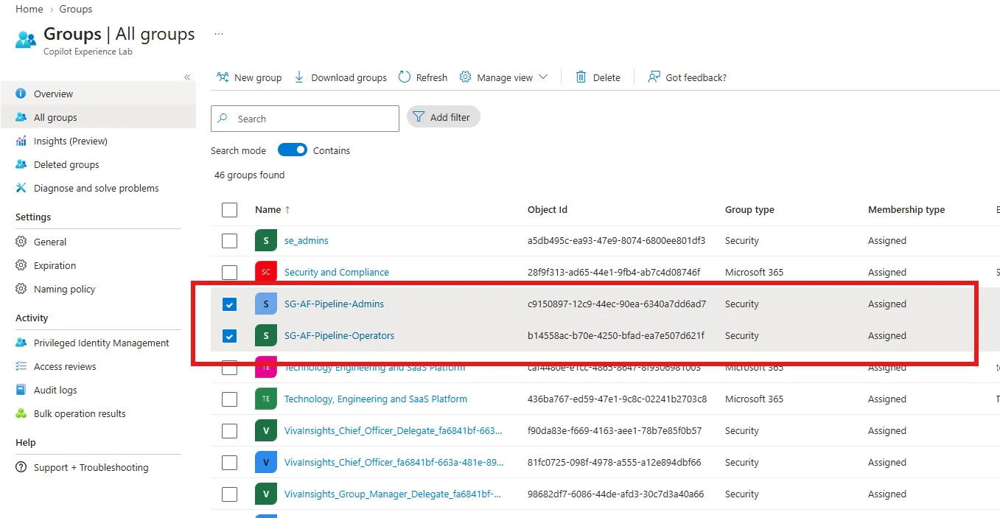
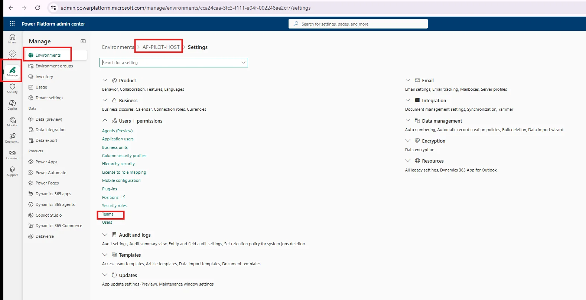
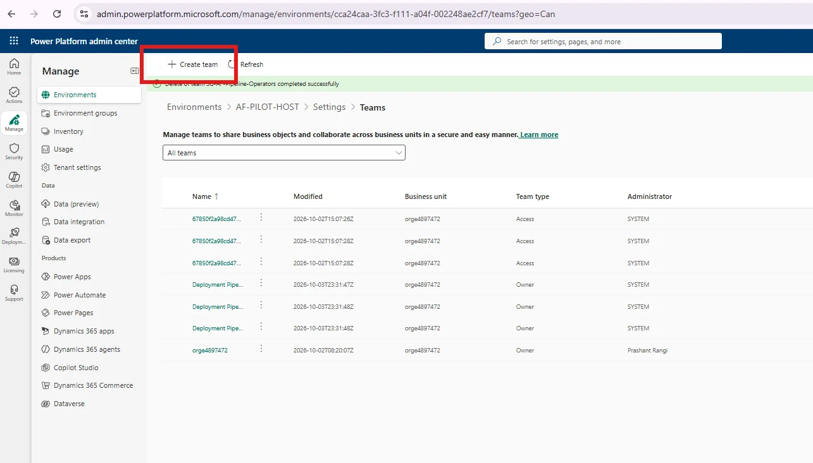
SG-AF-Pipeline-Adminsorge4897472Prashant Rangic9150897-12c9-44ec-90ea-6340a7dd6ad7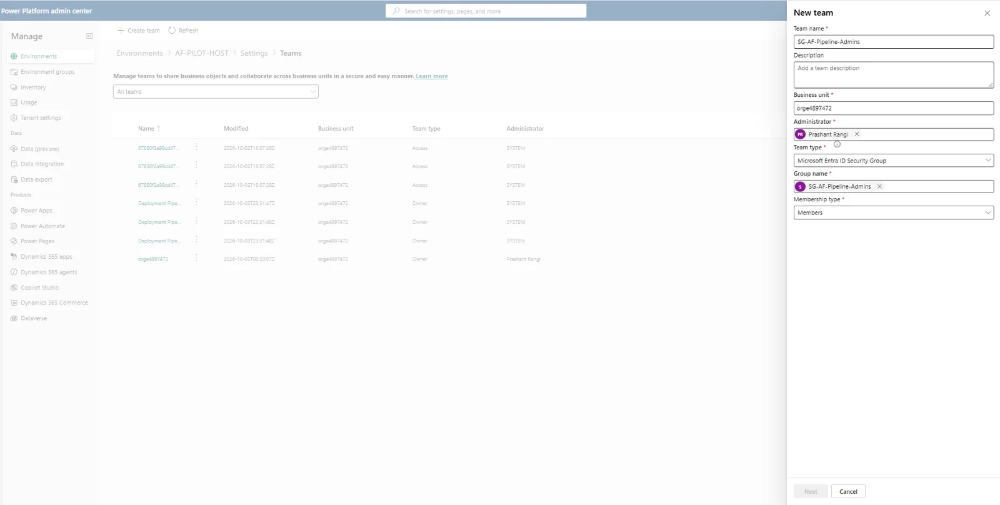
Repeat Create team for SG-AF-Pipeline-Operators, select its matching Microsoft Entra security group, and keep Membership type: Members. Use the business unit and administrator appropriate to your environment.
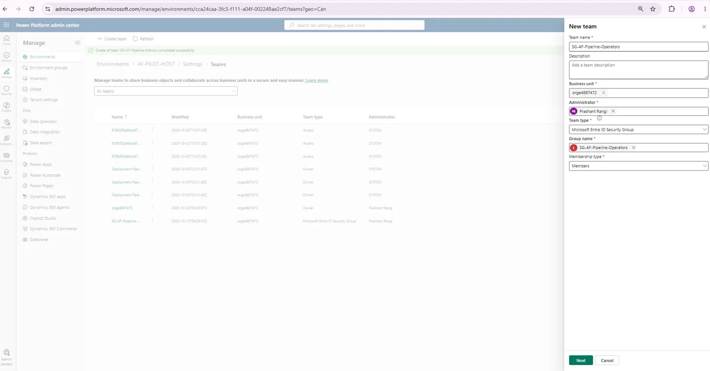
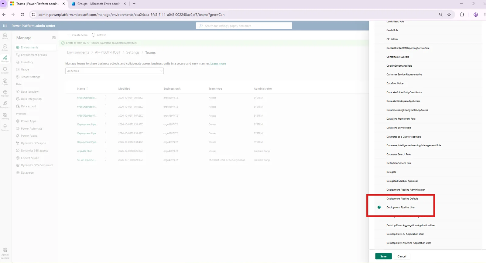
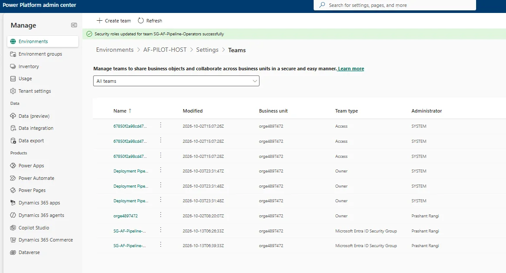
After assigning the Deployment Pipeline User role, the pipeline record must be shared with the operator team.
AF-PILOT-Standard-Release.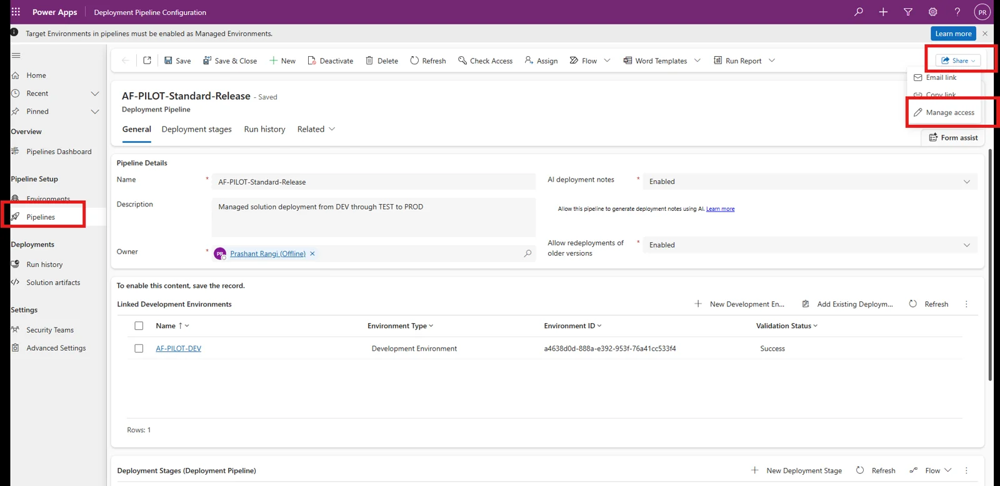
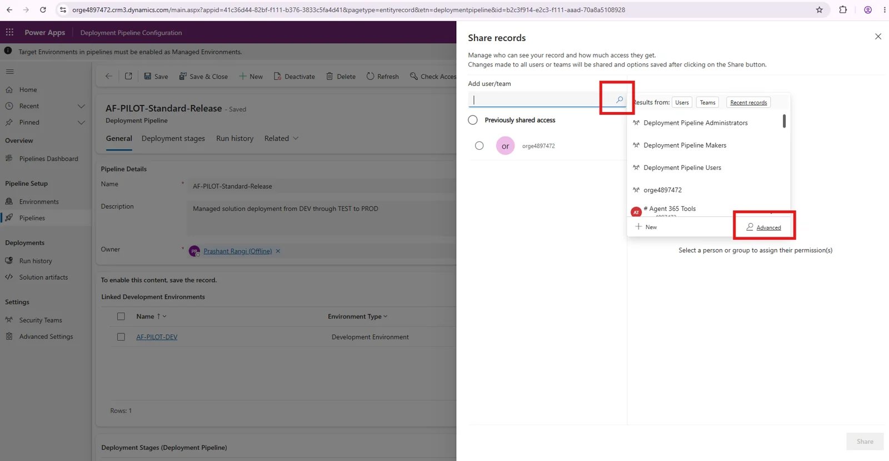
SG-AF-Pipeline-Operators.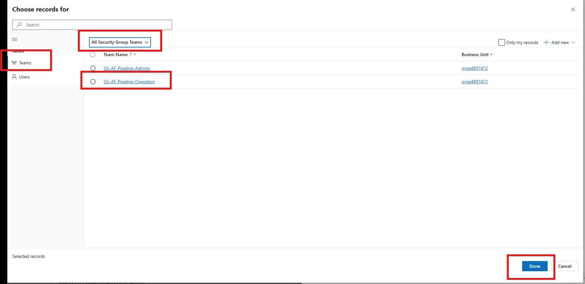
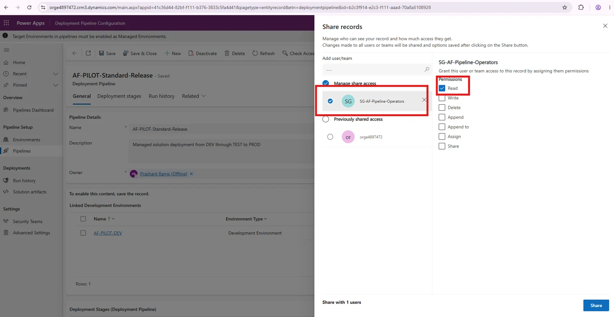
Read access allows operators to discover and run the shared pipeline without giving them permission to modify its configuration.
The SG-AF-Pipeline-Admins team does not need each pipeline record to be shared individually.
Pipeline roles do not automatically grant access to DEV, TEST, or PROD. Environment access and Dataverse security roles must still be managed separately.
Agents are deployed as solution components, so an uncontrolled pipeline can introduce unreviewed agent instructions, actions, connectors, knowledge sources, or configuration changes into production.
When group memberships and effective permissions are validated, these controls help ensure that:
These configurations establish a group-based access-control foundation for the Agent Factory pipeline. Administrators manage pipeline configuration, while operators receive access to run the shared pipeline without modifying it. This makes access management more repeatable as additional agent projects and release operators are onboarded.
Before treating the setup as validated, test administrator and operator access, review overlapping memberships and direct permissions, and confirm the required source and target environment privileges. PROD approval gating and delegated deployment remain separate configuration steps.
A separately configured and tested PROD approval gate can add independent release review. Delegated deployment determines the deployment identity; it does not by itself establish independent review.